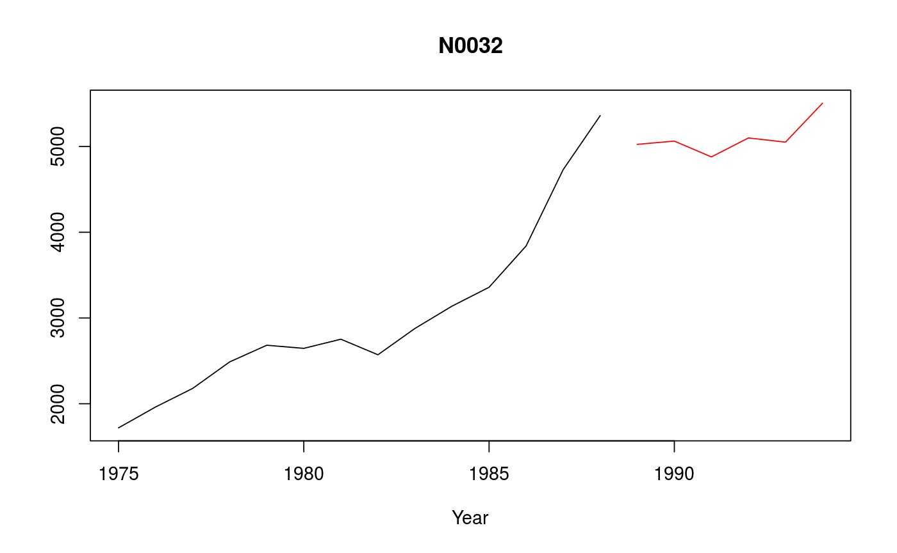

The time series from the M3 forecasting competition.
M3
M3 is a list of 3003 series of class Mcomp. Each series within M3 is
of class Mdata with the following structure:
Name of the series
Series number and period. For example "Y1" denotes first yearly series, "Q20" denotes 20th quarterly series and so on.
The number of observations in the time series
The number of required forecasts
Interval of the time series. Possible values are "YEARLY", "QUARTERLY", "MONTHLY" & "OTHER".
The type of series. Possible values for M3 are "DEMOGRAPHIC", "FINANCE", "INDUSTRY", "MACRO", "MICRO", "OTHER".
A short description of the time series
A time series of length n (the historical data)
A time series of length h (the future data)
http://forecasters.org/resources/time-series-data/m3-competition/.
Detailed results from M3 competition at http://www.insead.edu/facultyresearch/research/doc.cfm?did=1094.
Makridakis and Hibon (2000) The M3-competition: results, conclusions and implications. International Journal of Forecasting, 16, 451-476.
M3#> M-Competition data: 3003 time series #> #> Type of data #> Period DEMOGRAPHIC FINANCE INDUSTRY MACRO MICRO OTHER Total #> MONTHLY 111 145 334 312 474 52 1428 #> OTHER 0 29 0 0 4 141 174 #> QUARTERLY 57 76 83 336 204 0 756 #> YEARLY 245 58 102 83 146 11 645 #> Total 413 308 519 731 828 204 3003plot(M3[[32]])subset(M3,"monthly")#> M-Competition data: 1428 MONTHLY time series #> #> Type of data #> Period DEMOGRAPHIC FINANCE INDUSTRY MACRO MICRO OTHER #> MONTHLY 111 145 334 312 474 52